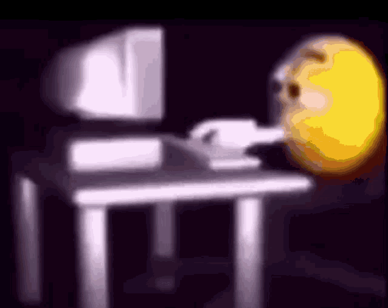

Hola, soy Facundo Moráz.
El flaco de acá arriba, no soy muy fotgenico lo sé.
empesando a programar no me quemen tanto.
Proyectos
-
Me gusta ver anime (principalmente isekais, romances y de venganzas.), ver series de mi infancia, ver peliculas (especificamente de terror) y reirme de sus errores, ver videos de youtube, inventar historias para personajes, inventar personajes dibujar (cada tanto), ver dibujos de otras personas, jugar a videojuegos principalmente aquellos que no son competitivos o en otras palabras jugos casuales no los hiper casuales, escuchar musica (de cualquier tipo), escuchar raps de videojuegos, cocinar, leer mangas, muy aveces leo libros, arreglar cosas que sepa como arreglar claro y imaginar situaciones, juegos, historias, etc.
-
Suelo jugar videojuegos, ver algo en internet y dibujar lo que me pinte en el momento.
-
Yo nací acá en Rafaela, vivo en la casa de mis viejo esperando mientras estudio en la Unraf, estudié en la escuela Villa Rosas N°478 del barrio del mismo nombre luego en la secundaria Mario Vecchioli N°429, elegí la carrera porque en el momento dije "ya ta elijo esta de videojuegos porque me gustan" aparte ya estaba medio podrido de jugar siempre lo mismo y tenia(y tengo) en la cabeza hacer mis propios jugos con sus historias y lore.
-
Soy fan de ZellenDust, Vegetta777, Naoya Matsumoto (mangaka de kaiju N°8), de Eminem, ZarKort (por sus canciones), KeyBlade y Kronno Zomber.